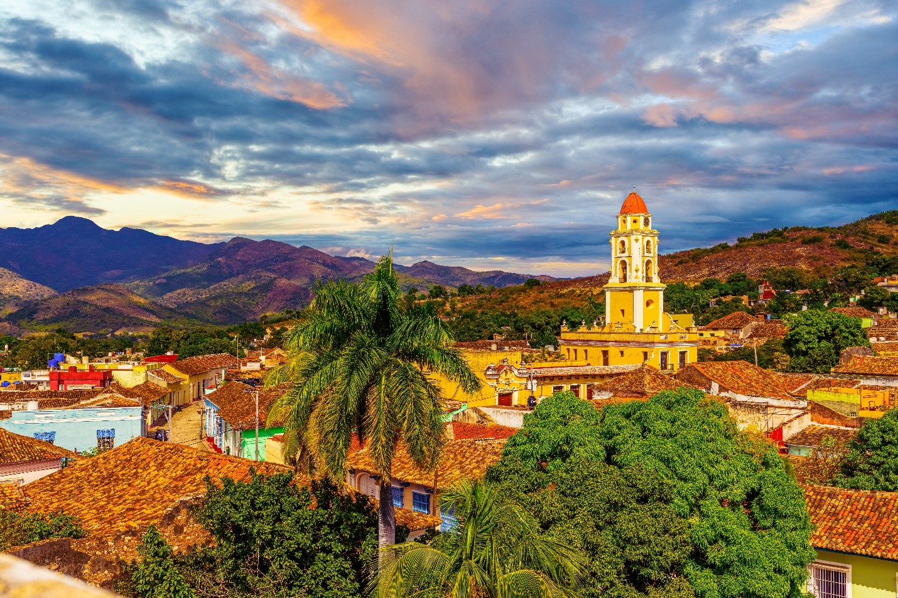
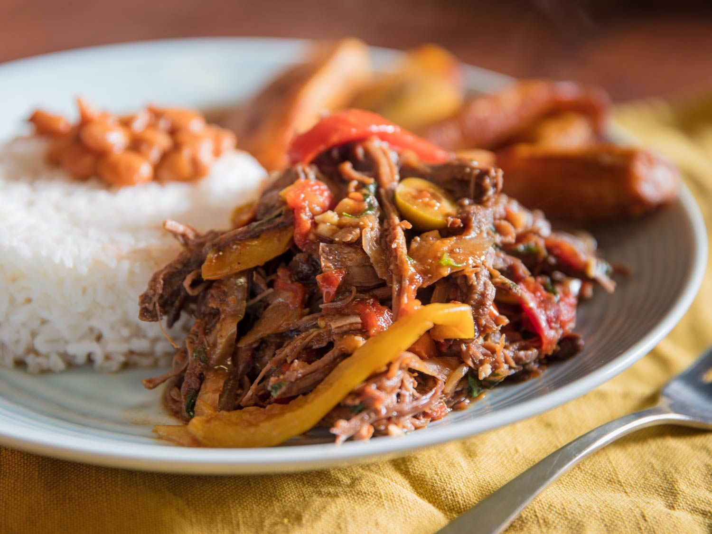
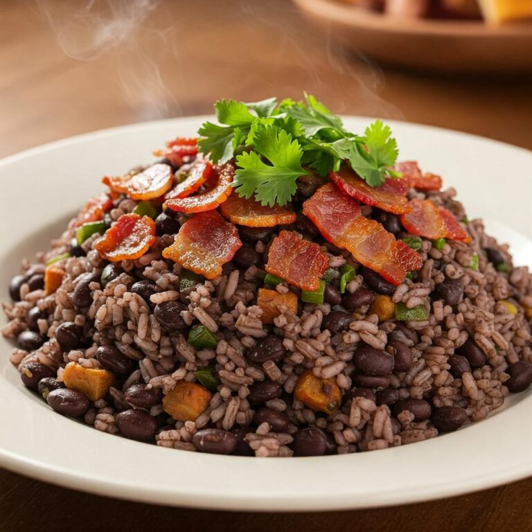
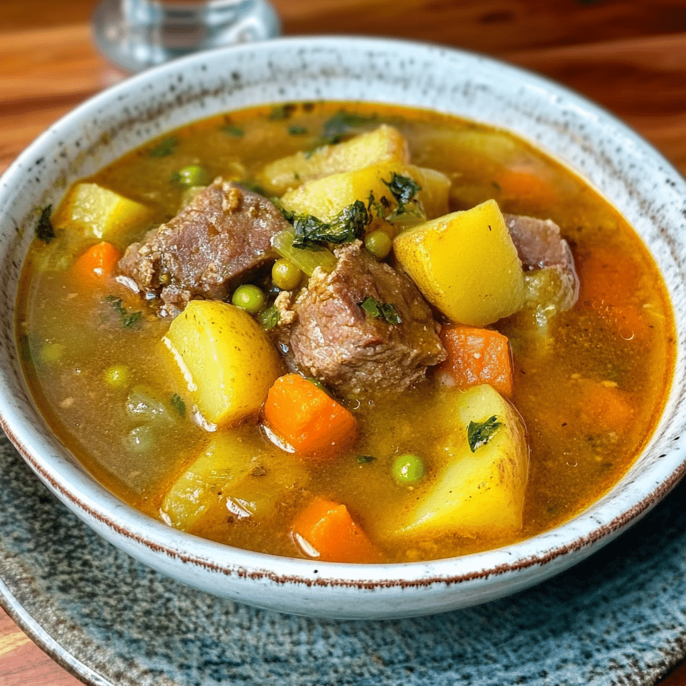

Music & living culture
Cuban music is everywhere — from son and salsa in Havana’s clubs to street bands in small plazas. Expect live performances, spontaneous dancing, and festivals that celebrate Afro-Cuban rhythms and local musicians.

A quick look at what makes Cuba special — strong cultural scenes, iconic landscapes, and unforgettable food & music.
Cuban music is everywhere — from son and salsa in Havana’s clubs to street bands in small plazas. Expect live performances, spontaneous dancing, and festivals that celebrate Afro-Cuban rhythms and local musicians.
Old Havana, Trinidad, and Cienfuegos showcase colonial architecture, cobbled streets, and colorful facades. These towns offer museums, plazas, and walking routes that put Cuba’s layered history on display.
From Varadero’s white sands to Viñales’ limestone mogotes, Cuba offers snorkeling, diving, hiking, and scenic drives. Nature lovers will appreciate the diversity of coastal and inland landscapes.
Paladares and street vendors serve ropa vieja, arroz con pollo, and fresh plantain dishes. Eating in Cuba is a hands-on cultural experience — seek out family-run spots for the most authentic flavors.
Cuban Peso (CUP)
Spanish
November – April
Havana
1519 (Spanish settlement)
~11 million (estimate)

Old Havana’s plazas, restored baroque and neoclassical buildings, and lively street performers create a layered and walkable historic core. Spend time in Plaza Vieja and Plaza de la Catedral; explore museums and local cafés and enjoy live music at night.

Varadero’s long white sands and calm waters are ideal for swimming, snorkeling, and family beach days. Resorts and day-trip options make it a convenient base for ocean activities and relaxed seaside time.

Known for its dramatic mogotes (limestone hills) and tobacco farms, Viñales is a peaceful area for hiking, horseback riding, and guided farm visits. The valley is photogenic and offers insight into rural Cuban life and agriculture.

Guardalavaca’s calm, clear waters are great for snorkeling and relaxed beach days. The coastline offers small bays and hidden coves, with nearby rural towns that feel quieter than the busier resort stretches.

Trinidad is a UNESCO World Heritage town with cobbled streets, colorful facades, and nearby natural attractions. Explore local museums, artisan markets, and the nearby beaches and waterfalls for a mix of culture and nature.

Shredded beef stewed in a rich tomato and pepper sauce, usually served with rice and black beans. A cornerstone of Cuban homestyle cooking and a favorite for its tender texture and savory flavors.

A hearty rice and black beans dish cooked together with sofrito, garlic, and pork. Congrí is a Cuban staple that pairs perfectly with grilled meats or as a comforting side.

A comforting Cuban broth made with seafood, root vegetables, and a splash of lime. Caldosa is often served in a clay pot and is perfect for cooler evenings or as a flavorful starter.
Cuba can be a rewarding destination for many traveler types. Families will find beach resorts and short day trips suitable for children; couples and cultural travelers will enjoy museums, music, and colonial towns; solo travelers will find friendly local scenes and social nightlife, but should use normal urban safety precautions (watch belongings, avoid poorly lit or isolated areas at night). Infrastructure varies outside major tourist hubs — sidewalks and ramps may be limited in smaller towns. For visitors with mobility needs, contact hotels and tour operators in advance to confirm room accessibility, ground transport suitability, and availability of accessible tours. Medical facilities are available in major cities, but specialized care may require travel to larger hospitals; ensure appropriate travel insurance and medication planning before arrival. For neurodiverse or sensory-sensitive travelers, busy markets and festivals can be loud — plan quieter activities and check in with local guides about less-crowded times to visit popular sites.